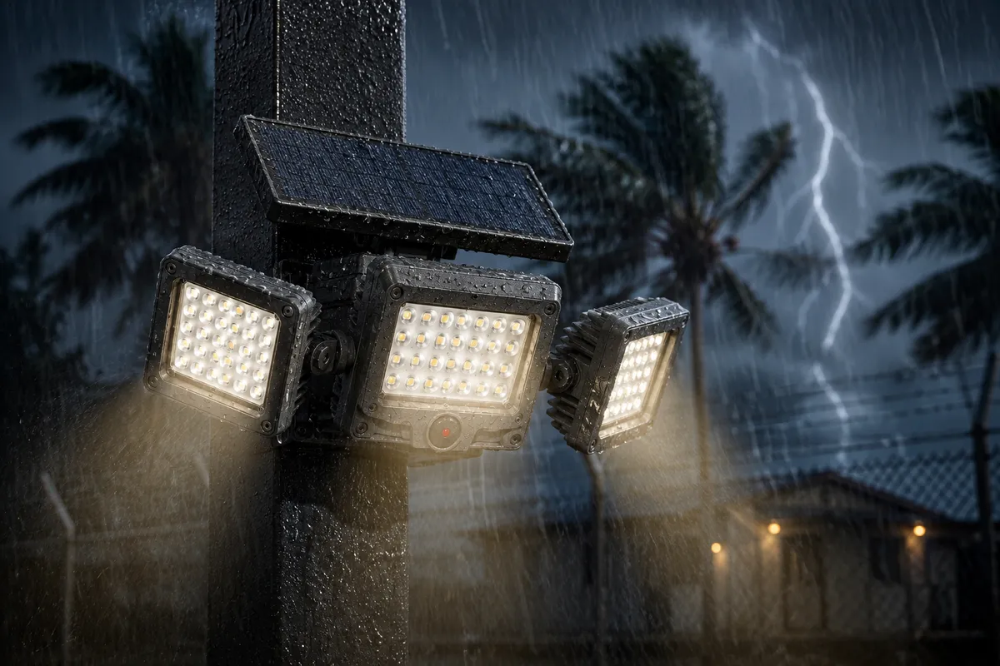

Guía de apagones: iluminación solar de seguridad
Cuando se va la luz, la seguridad no puede depender de la red. Qué iluminación solar conviene tener en stock para mercados con apagones frecuentes.

Los apagones —programados o repentinos— han cambiado el mercado de la iluminación de seguridad en Latinoamérica. Cuando el suministro falla, hogares, comercios y fincas quedan a oscuras justo cuando la seguridad es más necesaria.
La iluminación conectada a la red falla por completo durante un corte. Los sistemas con UPS duran de 30 a 60 minutos, insuficiente para un apagón de varias horas. Las plantas eléctricas son caras y ruidosas.
La iluminación solar de seguridad lo resuelve de raíz. Cada luminaria es su propio sistema autónomo: no le importa si la red está caída. Los distribuidores que mantienen reflectores solares en catálogo ven una demanda fuerte y sostenida cada vez que se intensifican los cortes.
Qué conviene tener en stock:
- Reflectores con sensor PIR (1.500–2.500 lm) para perímetros y portones
- Luminarias viales solares todo-en-uno (100–200W) para entradas y vías de acceso
- Apliques de pared (800 lm) para entradas y senderos
- Luces de pilar y jardín (5W) para el paisajismo de la propiedad
Todas las unidades deben especificar batería LiFePO4 (la tolerancia al calor importa en climas cálidos), IP65 como mínimo y sensor PIR de 8–12 m en la gama de seguridad.
JC Lightning despacha contenedores listos para Latinoamérica desde Shenzhen, con empaque y manuales en español disponibles a pedido.